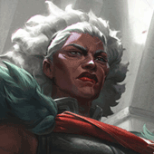
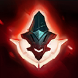
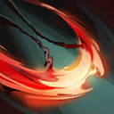
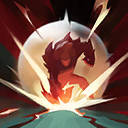
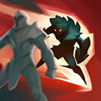

起手裝備
 紅水晶
紅水晶

星蝕後接死亡之舞及席利妲，精進之矛移到第四件，先取得防物理爆發與穿透。


五件成裝與鞋子分開列示；起手與核心是購買路線，不是額外佔用的成裝欄位。鞋子完成時機仍依對線壓力與回城金錢調整。


征服者配技能後普攻；爆破支援邊線，回春、堅毅維持長線容錯。


安比薩：閃現調整進退，點燃補短換血收尾與重創；沒有擊殺窗口時不要為點燃強行離開兵線。
加點優先：Q > E > W
修正為Q > E > W；優先提升暗襲／裂斬。15級分配已核對，每個基本技能四點，大絕於5、9、13級升級。

施放技能後輸入移動指令會向該方向衝刺，並強化下一次普攻的距離、傷害與攻速，同時返還能量。

第一次向前方半圓揮擊，外圈造成更高傷害；命中後短時間內可再次直線斬擊，第一個命中的敵人承受額外傷害。

先獲得護盾並擺出防禦姿態，再重擊周圍敵人；防禦期間擋下非士兵來源的傷害時，重擊會強化。
揮舞雙刃傷害並緩速周圍敵人；若在施放後觸發被動衝刺，短暫延遲後會再次攻擊。

被動獲得物理穿透與技能吸血；主動閃現至指定方向最後方英雄身後並壓制，接著將其摔向前方。 7.2b 施放期間傷害減免為 10/20/30%，依目標已損失生命造成的基礎傷害為 10/17.5/25%。
技能間需要普攻回能，不能只連續位移；二技護盾吸收傷害後再反打。
一段1技 → 被動位移 → 二段1技 → 普攻 → 3技
每次施放技能後穿插被動位移與普攻，用一技兩段和三技完成短換血。
4技 → 2技 → 一段1技 → 被動位移 → 3技 → 二段1技
大絕鎖定後排後立即開二技吸收反打，再靠技能後位移黏住目標。
3技 → 被動位移 → 2技 → 普攻 → 一段1技 → 二段1技
利用三技起手減速，技能間持續觸發被動位移，避免一次把所有技能同時交完。
前期打短換血，技能後至少穿插一次強化普攻，二技能優先擋對手爆發。
星蝕 → 死亡之舞 → 席利妲咒怨為主要成裝順序。星蝕後接死亡之舞及席利妲，精進之矛移到第四件，先取得防物理爆發與穿透。
後期以側翼刺入為主，避免當主坦正面吃滿控制；擊殺後再靠位移轉火。
杰西射程、墨菲特物防與雷尼克頓怒氣暈眩都會限制換血，三技副升提高黏人循環。
對局名單是機制與分路判斷，不代表固定勝率；需同時看雙方熟練度、兵線與陣容。
杰西射程、墨菲特物防與雷尼克頓怒氣暈眩都會限制換血，三技副升提高黏人循環。
星蝕後接死亡之舞及席利妲，精進之矛移到第四件，先取得防物理爆發與穿透。
威脅名單參考同分路指南；較有利名單仍是機制推論，需連同兵線、打野與玩家熟練度判斷，並非台服勝率排名。
以下情境替換以本頁7.3b五件成裝為基準。同一格多項建議擇一；鞋子由二級升三級，主動裝另占成裝格。
高
觸發：敵方前排物防／魔防成形，或近身普攻威脅明顯。
目前配置已提供部分坦克／普攻威脅所需功能；先按威脅調整購買順序，不為分類名稱強行多買一件。
高
觸發：主要死亡原因是一輪集火，無法完成輸出或控制。
目前配置已提供部分爆發／暴擊多所需功能；先按威脅調整購買順序，不為分類名稱強行多買一件。
高
觸發：敵方法術先手或持續魔法傷害成為主要威脅。
守護天使 → 魔提斯深淵
面對魔法傷害多時，將守護天使換成魔提斯深淵；先保留前三件核心，若替換核心位須確認目前死亡或輸出不足的原因。
面對魔法傷害多時，將守護天使換成魔提斯深淵；先保留前三件核心，若替換核心位須確認目前死亡或輸出不足的原因。
高
觸發：魔法傷害與控制鏈影響生存或輸出。
鍍板鋼蓋 → 水星之靴
魔法傷害及可縮短的控制占主導時，整條改水星之靴→鎖鏈軍靴；韌性不能縮短擊飛。
魔法傷害及可縮短的控制占主導時，整條改水星之靴→鎖鏈軍靴；韌性不能縮短擊飛。
韌性不能縮短所有控制，例如擊飛；護盾與解控各有適用條件。
高
觸發：敵人持續回復令集火失敗。
席利妲咒怨 → 致死宣告
治療影響交戰時，用致死宣告取代本頁百分比物穿位，避免同時堆多件最後耳語路線。
治療影響交戰時，用致死宣告取代本頁百分比物穿位，避免同時堆多件最後耳語路線。
7.3c差異核對：7.3c直接平衡項目屬符文大亂鬥；本頁保留已核對的峽谷配置。版本更新不等於每位英雄都必須更換Tier或裝備。查看整輪校正範圍。
本頁校正版本：7.3c；校正日期：2026-10-25。
參考來源標示版本：7.3c
本輪核對官方版本差異、道具/符文引用、五成裝與鞋線、逐級加點及情境替換一致性。Tier及玩法屬本站編輯判斷，不是官方排名或台服勝率；未公開的全級技能表不推算。
評級理由：7.3c 維持 S（本站判斷）。調整S；同分路公開指南參考為S。杰西射程、墨菲特物防與雷尼克頓怒氣暈眩都會限制換血，三技副升提高黏人循環。 7.3c 未改動此分路的英雄數值，沒有新證據只因版本號而升降。
Riot 官方資料 ↗ · Riot 官方資料 ↗ · Riot 官方資料 ↗ · Riot 官方資料 ↗ · WildRiftFire 參考攻略 ↗ · WildRiftFire 參考攻略 ↗ · Riot 官方資料 ↗
7.3c 的直接英雄倍率改動屬符文大亂鬥；本召喚峽谷配置承接 7.3b。未把模式專屬增削轉為峽谷增削。
五件成裝、獨立鞋線、起手、核心、情境替換引用與一般符文列別均重新檢查；移除裝備不列入當前推薦。